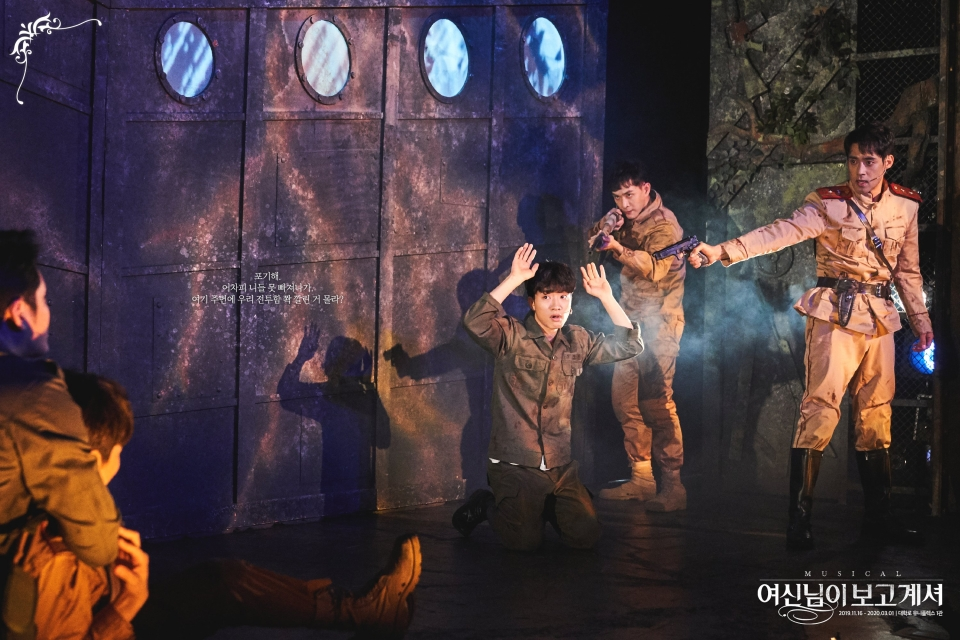
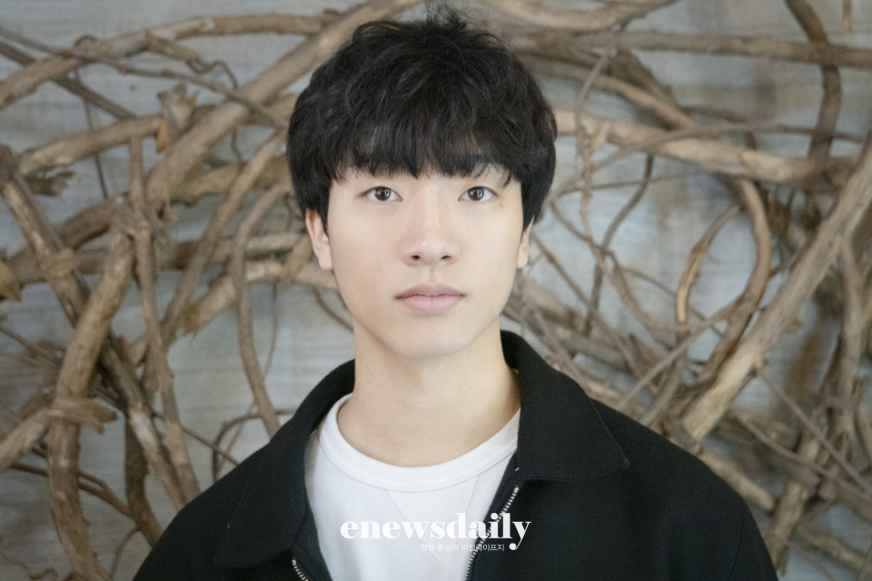
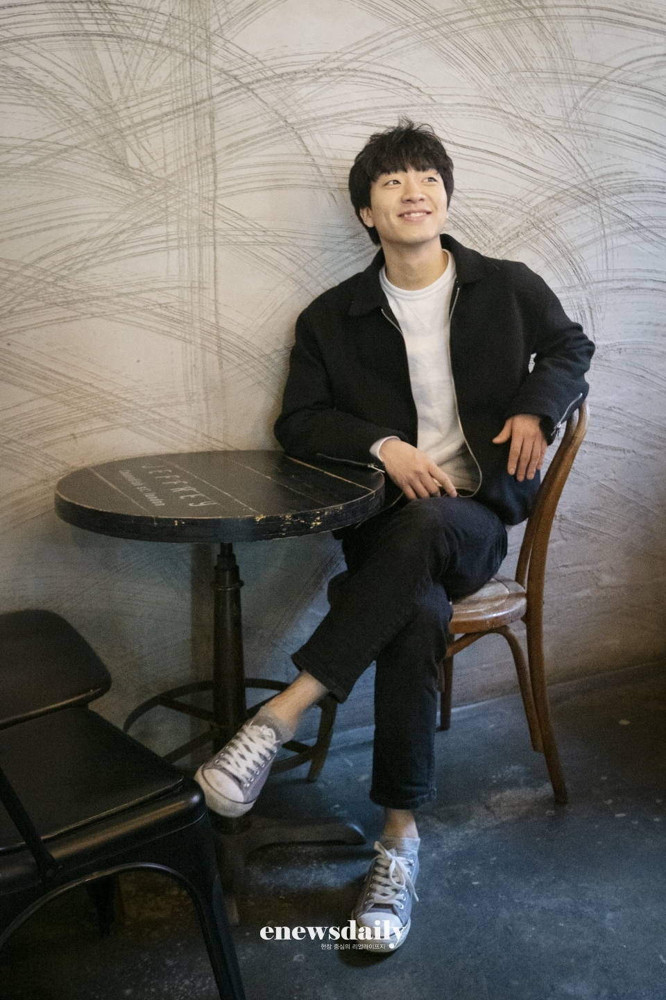

[인터뷰②] '여보셔' 안지환 "좋은 에너지 주는 배우 되고파"
이뉴스데일리 김은정 기자
2020.02.03
2020.02.03
(이 게시물은 네이버 포스트 종료로 백업하였습니다.)
안지환에게 힘이 되어주는 존재는 '가족'
'여보셔' 통해 힐링과 소중한 존재 찾길 바라는 마음
차기작 '브라더스 까라마조프'에서 이미지 변신
'여보셔' 통해 힐링과 소중한 존재 찾길 바라는 마음
차기작 '브라더스 까라마조프'에서 이미지 변신
(인터뷰①에 이어)
오디션을 볼 때 많이 떤다는 안지환에게 긴장 푸는 방법을 물었더니 "없다"고 답한다. 떨리는 건 어쩔 수 없다는 것. 그러면서 연습의 중요성을 강조한다. "100을 준비해도 100을 다 보여줄 수 없다. 더 많이 준비해야 한다. 그러면 망해도 80은 보여줄 수 있으니까!"
뮤지컬 ‘여신님이 보고 계셔’에 출연 중인 만큼 당신의 여신은 누구인지 물었다. 안지환은 “가족”이라고 즉답했다.
“혼자 오래 살다 보니 어쩌다 집에가면 마음이 따뜻해지는 걸 느낄 때가 있다. 다들 그렇겠지만, 특히 배우라는 직업은 매 순간 평가받고 잘해야 한다. 그런데 집에 가면 내가 무엇을 하더라도 ‘잘했다’고 칭찬과 격려해주는 가족이 있다. ‘지환이 잘하네’라고 말해주니까 그런 마음에 힘을 받아서 내가 살 수 있는 게 아닌가 생각한다.”
남한 군인인 석구는 비슷한 또래의 북한 군인 변주화와 우정을 나눈다. 무대 한쪽에서 계속 꽁냥거리며 시선을 강탈하는데, 두 사람이 친해진 계기가 궁금했다.
“우선 두 사람은 나이가 비슷하다. 사람은 자신과 비슷한 사람을 좋아하잖나. 주화도 석구처럼 거리조절을 잘 안 한다. 그래서 석구와 잘 맞아서 친해지게 됐다. 주화와의 장면을 하다 보면 훈련소 때 생각이 많이 난다. 100일 동안 함께 하면서 애틋해진 친구가 있었고 뜨거운 우정을 나눴는데 ‘꼭 보자’고 해놓고 안 만났다. 훈련소 동기는 그렇게 되더라.(웃음)”
작품 속 모든 캐릭터는 각양각색의 매력을 지녔다. 그 가운데 안지환은 이창섭을 가장 무서운 인물로 꼽았다.
“역시 이창섭이 가장 무섭다. 그런데 처음에는 무섭다가 차차 그에게도 순수한 마음이 있다는 걸 알게 되고 교감하게 되면서 두려움은 사라진다.”

ⓒ 연우무대
‘여신님이 보고 계셔’는 출연 배우가 많은 만큼 매 시즌 화기애애한 분위기라는 후문이다. 쉴 새 없이 웃음꽃 피었다는 이번 현장에서 기억나는 에피소드가 있는지 물었다.
“런을 돌 때 ’여신님이 보고 계셔’ 넘버가 끝난 후 기립박수를 친다. 그게 웃긴다. (왜 기립박수를 치나?) 넘버에서 고음 소화하는 게 쉽지 않다. 그래서 클리어하고 나면 서로 잘했다고 박수를 쳐주는 거다.(웃음) 무대에서 생긴 실수도 있다. 하루는 내가 무릎 보호대를 깜빡하고 안 차고 나갔다. 이걸 안 하면 계속 무릎을 다쳐서 큰일 나는데 형들한테 소문이 났다. 포박되어 있는 장면에서 (손)유동이 형이 계속 무릎을 만지면서 놀리는 거다. 웃지는 않았지만 당황했다. 그 후에 석구가 안 나오는 시간이 있어서 빨리 뛰어가 보호대를 차고 나왔다. 매번 누군가 무대에 오르기 전 ‘무릎 보호대를 차라’고 알려준다. 그러면 누군가는 ‘아 까먹었다’하고 뛰어가서 보호대를 차고 돌아오는데, 그때마다 ‘알려주지 말 걸 그랬다’면서 웃는다. 우리는 서로의 고통을 좋아하는 편이다.”
안지환이 ‘여신님이 보고 계셔’를 통해 전하고 싶은 메시지는 무엇일까.
언젠가부터 사람들은 마음속에 신이 없다고 한다. 종교를 믿지 않는다는 게 나쁘다는 말이 아니라 마음속 ‘여신님’, 즉 선(善)을 향하려고 하는 마음이다. 그런 이상적 부분을 공연으로 찾아가시면 좋겠다. 직접 무대에 오르면서 울컥할 때가 많다. 미움, 분노, 괴로움이 사라질 거라고 말하지만 앞에 놓인 상황만 보면 사라질 수가 없는 거다. 그런데 신(神), 선함, 아름다움 이런 이상을 떠올리는 순간 그런 불안과 두려움이 사라지는 느낌이다. 알 수 없는 감정에 ‘울컥’하게 된다. 관객분들도 공연을 보며 짧은 시간이지만 힐링하시고 자신만의 ‘여신님’을 찾아가시면 좋겠다.”

연극으로 데뷔한 그는 이후 ‘전설의 리틀 농구단’ ‘무한동력’ ‘더 픽션’ 등 뮤지컬 무대에서 더 활발한 활동을 펼쳤다. 배우 안지환의 시작부터 현재까지의 이야기가 궁금했다.
“사실 나도 뮤지컬을 하게 될지 몰랐다. 입시 때 접한 뮤지컬은 ‘지킬 앤 하이드’ ‘아이다’ 등의 작품이다. 바로 ‘내가 할 게 아니구나, 나는 저 정도는 할 수 없겠다’고 생각했다. 그런데 막상 해보니까 뮤지컬이 정말 재미있더라. 특히 창작뮤지컬을 하면서 연기 색이 맞는다는 걸 느꼈다. 연극이 조금 더 세세하고 구체적이며 사실적이라면, 뮤지컬은 더 시적이다. 시간 점핑도 크잖나. ‘여신님이 보고 계셔’에서도 석구와 누나의 사연이 4분 정도로 담기는데 관객에게 다 전달된다. 뮤지컬이 아니면 이렇게 풀어낼 수 없을 것이고 그런 점이 매력적이다.
첫 뮤지컬인 ‘전설의 리틀 농구단’은 원래 학교 작품이었다. 한국예술종합학교를 다니면서 독회에 참여하게 되었는데 그것도 ‘해볼래?’라는 가벼운 제안으로 시작됐다. 그러다가 안산문화재단에서 무대를 올리면서 나도 함께 하게 됐다. 이후 좋게 봐주신 분들 덕분에 ‘무한동력’도 참여할 수 있었고 지금까지 달려왔다. ‘여신님이 보고 계셔’는 지금 하고 있지만, 진짜 목표였다. ‘하고 싶은 작품’이라고 목표를 세웠었는데 빨리 이뤄져서 좋았다. 그런데 사람의 감정이란 멈추지 않아서 또 다른 목표를 세워보려고 한다.
(노래는 어떻게 하게 되었나?) 원래 나는 노래를 먼저 했다. 입시를 준비하며 실용음악학원을 다녔는데, 선생님이 내가 잘하는 보컬스타일이 팝, 록, 포크 쪽이라고 하더라. 그런 색이 묻어있을 때 장점이 더 발휘된다는 걸 알아서 그런 작품을 만나길 기다리고 있다. 뮤지컬도 그렇지만 연기를 할 수 있다면 장르는 상관없다. 앞서 웹드라마, 독립영화도 찍었는데 재미있었다. 다만 아쉬운 점은 아직 내가 분량이 많지 않아 짧게 나온다는 점이다. 단편 영화에서는 내가 호흡을 계산하면서 진행해 또 다른 재미를 느꼈다. 조금씩 욕심을 내서 긴 호흡으로 연기하는 모습을 보여드리고 싶다.”
지금까지 밝고 희망적인 작품에 주로 출연했던 그는 오는 2월 7일 개막하는 뮤지컬 ‘브라더스 까라마조프’에서 스메르쟈코프 역을 맡아 새로운 이미지를 선보일 예정이다. 변신이 기대된다고 하자 “깜짝 놀라실 것”이라며 기대감을 높인다.
“지금까지와는 굉장히 다른 모습을 보여드릴 것 같다. ‘안지환한테 저런 모습이 있었어?’하고 깜짝 놀라실 거다. 작품이 쉽지는 않다. 지금 가장 고민하는 건 ‘발작’ 넘버를 할 때 어떻게 할 것인가다. 그냥 노래를 잘하는 거랑은 다른 느낌인 것 같다. 과연 그 부분에서 노래를 잘 부르는 것만이 옳은 선택일까, 그렇다고 연기에만 집중해 노래가 흔들리는 것도 아닌 것 같은데 같은 고민을 하면서 열심히 찾으려고 노력하고 있다. 이 작품에서의 안지환도 많은 기대 부탁드린다.” 
데뷔 6년 차가 된 안지환이 생각하는 ‘배우의 매력’은 무엇인지 물었다.
“다양한 생각을 하게 해준다. 평소라면 안 할 생각을 배우라서 하게 된다. 사람은 누구나 자기 상황에 대해서만 생각하게 되잖나. 그 고민에만 빠져서 지루해질 수도 있는데, 연기하면서 고민거리가 바뀌는 것 같다. 물론 혼란스러운 부분도 있다. ‘여신님이 보고 계셔’를 할 때 전쟁 생각을 하다가도, 석구에 이입되면 캐릭터 변화를 생각한다. 또 ‘브라더스 까라마조프’ 같은 경우 철학적인 무게가 있는 작품이기에 ‘어떻게 삶을 살아야 하는가’ 같은 근본적 질문을 하게 된다. 매일 이런 생각만 하면 잠식될 수도 있겠지만 질문이 매일 바뀌다 보니 다채로운 삶을 살 수 있는 것 같다.”
앞으로의 활약이 더 기대되는 그에게 어떤 배우가 되고 싶은지 물었다. “이런 질문은 어렵다”며 시간을 들여 곰곰이 생각한 그는 “지금 방금 든 생각”이라면서 답을 이어갔다.
“좋은 에너지를 주는 배우가 되고 싶다. 지금 든 생각이다. 어떤 형태로든 사람들에게 좋은 에너지를 주는 존재가 되고 싶다. 작품을 하면서 나는 본질적인 것에 대해 생각한다. 그렇게 내면에서 끌어올린 에너지를 관객에게 잘 전달하면서 좋은 영향을 주고 싶다.”
올해 계획과 포부를 물었더니 그는 또다시 고민에 빠진다. “1년 단위로 목표를 세우지 않는다”는 것. 어렵게 생각을 마친 안지환은 공개할 수 있는 것과 아닌 것 사이에서 고민하다가 “올해 더 다양한 모습으로 관객분들을 만날 것 같다”고 말하며 웃어 보였다. 이와 함께 “제대로 쉰 날이 적어 여행을 가고 싶다”는 소망도 함께 밝혔다.
오는 3월 1일까지 유니플렉스1관에서 공연하는 ‘여신님이 보고 계셔’ 관람 독려 한 마디
“’여신님이 보고 계셔’를 보면 미움, 분노, 괴로움이 사라집니다. 많이 보러 와주세요~”
이뉴스데일리 김은정 기자 ninana@enewsdaily.co.kr